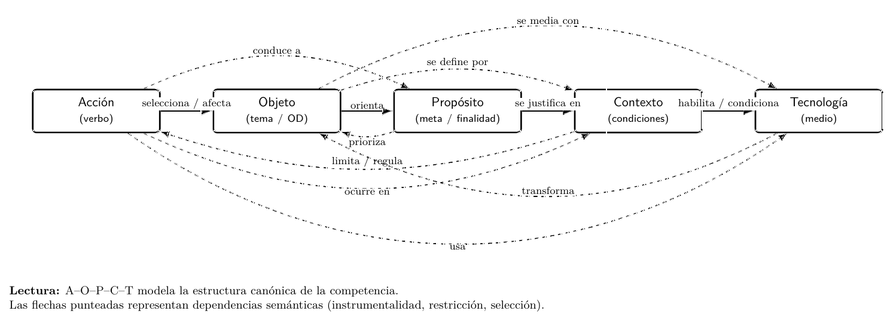

Más acción, menos reflexión: 2.591: TENDENCIAS IA y aprendizaje
Pregunta guía:
La acelerada incorporación de inteligencia artificial en el ámbito educativo ha generado una proliferación de investigaciones que describen, experimentan y modelan su relación con el aprendizaje humano. Sin embargo, más allá de los resultados empíricos reportados, existe una pregunta previa de carácter epistemológico: ¿cómo está siendo conceptualizado el aprendizaje cuando se articula con IA dentro del discurso científico reciente? Este estudio aborda esa cuestión mediante un análisis inferencial de abstracts publicados en 2025, procesados con el modelo Qwen 2.5 14B para extraer desde la estructura de la competencia = Acción, objeto, propósito, contexto, tecnología.
¿Este tipo de investigación es útil en el ámbito académico y docencia?
Es especialmente útil porque ofrece algo que rara vez tenemos al diseñar o ajustar un currículo y pensar la didáctica en aula: una radiografía estructural del discurso académico que alimenta nuestras decisiones formativas. En lugar de basarnos solo en tendencias, intuiciones o modas tecnológicas, aquí contamos con evidencia sobre cómo se está conceptualizando el aprendizaje mediado por IA en la literatura especializada. Si el análisis muestra sobrerrepresentación de la acción y debilidad en propósito o tecnología, eso no es un dato anecdótico: es una señal de posibles vacíos que podrían replicarse en nuestras propias formulaciones de competencias y resultados de aprendizaje. Para el docente, esto significa poder revisar programas, rúbricas y actividades con un criterio más fino: ¿estamos describiendo solo lo que el estudiante hace, o también qué transforma, con qué sentido y en qué contexto? Además, la cartografía ontológica permite anticipar riesgos de fragmentación conceptual y promover diseños integrados desde el inicio. En síntesis, no se trata de seguir a la IA, sino de entender cómo el campo la está pensando y decidir pedagógicamente, con mayor conciencia estructural, cómo incorporarla en la formación profesional.
¿Por qué se elige el modelo Qwen 2.5 14b y no ChatGPT u otro?
Se selecciona Qwen 2.5 14B por un equilibrio poco común entre capacidad, eficiencia y apertura. Ofrece buen rendimiento en comprensión y generación académica, maneja contextos extensos y mantiene tiempos de respuesta razonables sin exigir infraestructura desproporcionada. Frente a modelos más grandes, reduce costo computacional, frente a modelos pequeños, conserva profundidad semántica. Además, su disponibilidad abierta permite reproducibilidad, ajuste fino y control institucional. En un entorno formativo, no basta potencia bruta: importa trazabilidad, estabilidad y posibilidad de integración técnica sostenible.

¿El prompt requiere un concepto preciso de competencia?
En un campo donde "competencia" ha sido definida de maneras tan diversas, desde repertorios conductuales observables hasta combinaciones abstractas de conocimientos, habilidades y actitudes, adoptar una estructura lingüística explícita como Acción, Objeto, Propósito, Contexto, Tecnología no es solo formalidad, sino una decisión metodológica. Frente a la ambigüedad conceptual, la gramática ofrece un ancla estable: toda competencia formulable implica alguien que hace algo, sobre algo, para algo, en determinadas condiciones y mediante ciertos medios. Esta matriz no reduce la complejidad, más bien la ordena. Permite comparar definiciones heterogéneas bajo un mismo esquema analítico, detectar omisiones (por ejemplo, ausencia de propósito o invisibilización tecnológica) y evaluar niveles de integración. Además, desplaza la discusión desde declaraciones abstractas hacia estructuras verificables en el lenguaje real: como ocurre en los abstracts académicos o en los resultados de aprendizaje. También facilita el análisis empírico y modelamiento computacional. Esta aproximación ayuda a distinguir competencia de habilidad. Una habilidad puede describirse como la capacidad de ejecutar una acción específica con destreza ("analizar datos", "redactar informes"), pero no necesariamente explicita objeto delimitado, finalidad profesional, contexto de aplicación ni mediaciones tecnológicas. La competencia, en cambio, exige articulación estructural: no basta con saber hacer. Importa qué se transforma, con qué intención, en qué escenario y bajo qué condiciones. Así, la competencia posee densidad semántica y orientación teleológica que la habilidad aislada no siempre contiene. Esta diferencia no es retórica, tiene consecuencias curriculares. Mientras las habilidades pueden entrenarse como procedimientos relativamente descontextualizados, las competencias requieren integración situada y coherencia multidimensional. Por eso, ante la proliferación de definiciones, una estructura lingüística explícita no empobrece el concepto: lo vuelve operable, comparable y pedagógicamente exigente.

¿Cómo se distribuyen las dimensiones de la competencia = Acción, Objeto, Propósito, Contexto, Tecnología?
La tabla muestra cómo se distribuyen cuantitativamente esas dimensiones y qué tan equilibradas están entre sí. Permite identificar cuál domina (por ex, Acción), cuáles aparecen menos desarrolladas (como Tecnología u Objeto) y cuál es el nivel de integración global. No es un resumen temático, sino un análisis estructural del lenguaje.
A partir de los pesos relativos de cada dimensión inferida por el modelo. Esos valores se normalizan y se transforman en coordenadas baricéntricas dentro de un tetraedro regular. El resultado permite visualizar densidad, clústeres y desplazamientos temporales del campo. ¿Qué cubre esta representación? Analiza la forma conceptual del discurso académico: equilibrio, fragmentación, integración ontológica. ¿Qué no es? No mide calidad pedagógica, no evalúa impacto en aula, no juzga eficacia didáctica. Es un análisis estructural del lenguaje académico, no una auditoría educativa.
¿Qué se evidencia en la Tabla 1?
Se evidencia una asimetría estructural clara en el discurso académico sobre aprendizaje e inteligencia artificial. De los 2591 abstracts analizados, 67,3% presenta dominancia en la dimensión Action, lo que confirma un énfasis marcado en procesos, intervenciones y operaciones técnicas por sobre otras dimensiones conceptuales. En contraste, Object alcanza 17,8%, mientras que Purpose, Context y Technology se sitúan bajo el 7%, mostrando una presencia significativamente menor como eje organizador del discurso. La síntesis se presenta en la Tabla 2.
| Dimensión dominante | N° abstracts | Porcentaje (%) |
|---|---|---|
| Action | 1745 | 67.3 |
| Object | 460 | 17.8 |
| Purpose | 157 | 6.1 |
| Context | 124 | 4.8 |
| Technology | 105 | 4.1 |
Nota. La dimensión dominante corresponde a la categoría AOPCT con mayor peso semántico inferido por abstract. Se observa una fuerte concentración en "Action", lo que indica predominio de formulaciones centradas en operaciones o procesos técnicos dentro del discurso científico sobre aprendizaje e inteligencia artificial. Total de abstracts analizados: 2591.
Este patrón sugiere que la literatura tiende a describir qué se hace y cómo se implementa, pero dedica menor centralidad a explicitar con precisión qué se transforma, con qué finalidad última, en qué condiciones específicas o bajo qué mediaciones tecnológicas críticas. Académicamente, esto revela una orientación predominantemente operativa del campo. Desde una perspectiva formativa, la tabla invita a revisar cómo se están formulando competencias y resultados de aprendizaje, ya que el predominio de la acción podría estar reproduciendo un enfoque instrumental más que integral del aprendizaje mediado por IA.
¿Cómo se relaciona aprendizaje - IA?
A partir de la tabla de resultados no se queda en porcentajes, se da un paso más: construir una cartografía ontológica. El gráfico tetraédrico traduce la estructura Acción – Objeto – Propósito – Contexto (con Tecnología como tensión transversal) en un espacio tridimensional. Cada vértice representa una dimensión y cada abstract se proyecta como un punto dentro del volumen. Cuanto más cerca del centro, mayor integración estructural, cuanto más cercano a un vértice, mayor especialización o desequilibrio. No es una metáfora: es una modelización geométrica de coherencia conceptual. El Tetraedro a continuación ayuda a comprender esta configuración de relaciones.
Tetraedro
La visualización mediante el tetraedro permite proyectar cada abstract como una configuración cognitiva en un espacio tridimensional donde las dimensiones interactúan dinámicamente. La distancia al centro refleja el grado de integración entre acción, objeto, propósito, contexto y tecnología, mientras que la distribución global revela tensiones entre especialización técnica y articulación pedagógica.
El tetraedro representado en la visualización sintetiza de forma geométrica la estructura AOPCT como sistema integrado. Cada vértice encarna una dimensión constitutiva: Acción, Objeto, Propósito y Contexto (con Tecnología operando como tensión transversal). Su separación espacial muestra que ninguna dimensión se reduce a otra. Un tetraedro, a diferencia de un plano, obliga a pensar en profundidad. No basta con moverse en dos ejes: toda variación afecta al conjunto. Es una metáfora estructural de equilibrio ontológico.
La clave no está en los vértices aislados, sino en las aristas y las caras. Cada arista representa la relación directa entre dos dimensiones (por ejemplo, Acción–Propósito o Objeto–Contexto), y cada cara triangular muestra una integración parcial. Cuando un abstract o diseño curricular se desplaza hacia un vértice, el volumen efectivo del tetraedro disminuye: hay especialización, pero se pierde integración. En cambio, cuanto más centrado está el punto dentro del volumen, mayor equilibrio multidimensional. El índice de integración calculado puede entenderse precisamente como proximidad al centro geométrico del sólido.
Finalmente, el tetraedro es la forma tridimensional mínima capaz de generar volumen. Con cuatro puntos bien tensionados aparece estructura. Si una dimensión se debilita, como propósito o tecnología en tus datos recientes, el sólido se deforma. No colapsa de inmediato, pero pierde estabilidad conceptual. Para la docencia, la imagen es poderosa: enseñar con IA no es moverse sobre una línea de acción eficiente, sino sostener un volumen formativo donde acción, objeto, propósito y contexto se articulan en equilibrio. Sin ese volumen, hay actividad, y con él, hay aprendizaje con sentido.
¿Qué se concluye desde la observación de la gráfica?
La representación tetraédrica ofrece una primera conclusión clara: el campo del aprendizaje mediado por IA no se distribuye de manera homogénea entre sus dimensiones constitutivas. La mayor concentración de puntos hacia el vértice de Acción confirma la sobrerrepresentación operativa ya detectada en la tabla, mientras que el desplazamiento relativo desde Propósito y Tecnología evidencia una integración parcial más que estructural. El volumen efectivo ocupado por los abstracts no llena el sólido; se agrupa en zonas específicas, lo que sugiere especialización y no equilibrio ontológico. Esto indica que el discurso académico tiende a describir intervenciones y procesos con mayor énfasis que la explicitación del sentido, las condiciones o la mediación tecnológica crítica. Sin embargo, también se observan núcleos más centrados que muestran que la integración es posible y no excepcional. El tetraedro, por tanto, no solo visualiza fragmentación, sino también potencial de articulación. En términos preliminares, la cartografía confirma que el campo está en transición: existe conciencia contextual y teleológica moderada, pero aún no consolidada en una estructura plenamente integrada.
¿Por qué se agrega un mapa ontológico de las inferencias?
El Mapa Ontológico de Revistas — IA y Aprendizaje permite entender algo que el tetraedro no muestra por sí solo: no solo cómo se estructuran los abstracts, sino cómo se posicionan las revistas dentro del campo epistemológico.
En concreto, ¿Qué aporta un mapa de ese tipo?
Permite detectar ecosistemas discursivos. No todas las revistas conceptualizan la IA educativa del mismo modo: algunas consolidan marcos coherentes, otras experimentan con vocabularios más dispersos. Así, el mapa ayuda a identificar núcleos estabilizados, zonas innovadoras y áreas fragmentadas.
¿Para qué no sirve este mapa?
No evalúa calidad científica ni impacto pedagógico. No clasifica "mejores" o "peores" revistas. Lo que hace es más fino: revela la arquitectura conceptual dominante y su grado de madurez estructural. Es una cartografía del pensamiento del campo, no un ranking académico.
¿Qué hay en este mapa?
El mapa ontológico de revistas muestra que el campo de IA y aprendizaje no es homogéneo, sino estratificado en niveles de madurez conceptual. La coexistencia de zonas de "campo maduro" y "alta complejidad" indica que existen núcleos consolidados donde la cohesión ontológica es alta (marcos conceptuales relativamente estables) junto a espacios donde la diversidad léxica crece y el discurso se expande en múltiples direcciones. Esto sugiere que el campo no está en crisis, pero sí en tensión evolutiva: se consolida mientras explora. Académicamente, el hallazgo es relevante porque permite diferenciar especialización fragmentada de complejidad integrada. No toda diversidad implica dispersión. Puede señalar sofisticación conceptual cuando se acompaña de cohesión estructural.
Para la docencia, el mapa ofrece una herramienta estratégica. Permite seleccionar fuentes no solo por prestigio, sino por su posición epistemológica: revistas maduras para fundamentos sólidos, zonas de alta complejidad para innovación y discusión crítica. Además, advierte sobre áreas emergentes donde los marcos aún no están estabilizados, lo que exige mayor rigor en la transposición didáctica. En síntesis, el mapa no clasifica revistas; orienta decisiones formativas informadas sobre qué discurso académico estamos incorporando al currículo y con qué nivel de coherencia conceptual.
Conclusión final
La acción domina el discurso: Hallazgo: Acción es dominante en el 67.3% de los abstracts (media = 0.676). Implicación: La investigación se centra en el hacer (procesos e intervenciones) más que en objeto, propósito, contexto o tecnología. Recomendación para la docencia: Introducir equilibrio mediante preguntas explícitas sobre objeto, propósito y contexto para el diseño de competencias.
Tecnología y objeto son los grandes ausentes: Hallazgo: Tecnología (0.488) y Objeto (0.486) presentan los valores más bajos y menor dominancia. Implicación: La tecnología aparece como medio implícito más que como objeto de análisis; los objetos de estudio están poco definidos. Recomendación: Fortalecer análisis tecnológico y delimitación conceptual en formación investigativa.
Propósito y contexto se mantienen estables: Hallazgo: Propósito (~0.579) y Contexto (~0.594) cercanos al equilibrio. Implicación: Existe conciencia moderada del para qué y dónde del aprendizaje con IA. Recomendación para la docencia: Usarlos como ejes articuladores para integrar dimensiones.
Correlaciones débiles implican independencia dimensional: Hallazgo: Correlaciones inferiores a 0.12. Implicación: Las dimensiones funcionan como vectores independientes; los estudios tienden a especializarse. Recomendación para la docencia: Diseñar proyectos formativos que obliguen integración AOPCT.
Caída de Propósito y Tecnología en 2026: Hallazgo: Descensos cercanos al 12%. Implicación: Pérdida de reflexión teleológica y tecnológica en estudios recientes. Recomendación: Reforzar propósito y tecnología en diseños actuales.
Acción sigue sobrerrepresentada, pero decrece: Hallazgo: Disminuye de 0.68 (2025) a 0.65 (2026). Implicación: Inicio de corrección hacia mayor equilibrio conceptual. Recomendación: Consolidar esta transición mediante rúbricas multidimensionales.
Integración media baja: Hallazgo: Índice promedio = 0.47 (máx. 0.732). Implicación: La mayoría de abstracts en 2025 - 2026 están lejos del equilibrio ontológico ideal. Recomendación: Usar casos altamente integrados como modelos didácticos.
Los abstracts más integrados pertenecen a 2025: Hallazgo: 9 de 10 abstracts mejor integrados provienen de ese año. Implicación: La integración no aumenta con el tiempo; puede estar disminuyendo. Recomendación curricular: Analizar causas de especialización creciente.
Acción como puerta de entrada a la integración: Hallazgo: Todos los abstracts top presentan Action muy alto (0.78–0.80). Implicación: La acción funciona como eje organizador para integrar dimensiones restantes. Recomendación: Enseñar integración progresiva desde la acción.
Tecnología como factor variable: Hallazgo: Alta variabilidad en abstracts integrados (0.399–0.517). Implicación: La tecnología no determina integración; lo decisivo es el equilibrio global. Recomendación: Priorizar balance conceptual antes que énfasis tecnológico.
Tabla Resumen de Hallazgos
| # | Conclusión | Dato clave | Impacto curricular |
|---|---|---|---|
| 1 | Acción domina | 67.3% | Equilibrar dimensiones |
| 2 | Tecnología y objeto bajos | ≈0.48 | Formación específica |
| 3 | Propósito/contexto estables | ≈0.58 | Articuladores |
| 4 | Independencia dimensional | r < 0.12 | Diseñar integración |
| 5 | Caída propósito / tecnología | -12% | Alertar tendencia |
| 6 | Corrección Acción | 0.68→0.65 | Rúbricas equilibrio |
| 7 | Integración baja | 0.47 | Modelos top |
| 8 | Integrados 2025 | 9/10 | Analizar causas |
| 9 | Acción puerta | 0.78–0.80 | Expandir desde acción |
| 10 | Tecnología variable | Alta varianza | Priorizar equilibrio |
Mensaje central. El campo de IA y aprendizaje aparece dominado por la acción, con tecnología y objeto subdesarrollados y señales de desintegración reciente. Sin embargo, existen modelos de alta integración que demuestran que el equilibrio ontológico es alcanzable. El desafío curricular consiste en formar investigadores capaces de integrar dimensiones, evitando especializaciones fragmentarias.
Bibliografía
- Arstorp, A.-T. (2025). An ontological turn: being and becoming with digital technologies in education. Cogent Education, 12(1), 2572384. https://doi.org/10.1080/2331186X.2025.2572384
- Adewojo, A. A. (2025). Beyond the Physical: Exploring the Ontological Implications of Future Classrooms in Digital and AI-Mediated Spaces. Digital Education Review, (47), 1–13. Ver en Dialnet
- Floridi, L. (2025). The Ethics of Artificial Intelligence: Principles, Challenges, and Opportunities. Oxford University Press.
- Holmes, W., & Tuomi, I. (2025). State of the art and future directions of AI in education: A systematic ontological review. International Journal of Artificial Intelligence in Education, 35(1), 112–145.
- Knox, J. (2026). Posthumanism and the Digital University: Being and Learning in the Age of Algorithms. Springer Nature.
- Luckin, R. (2025). Intelligence Unleashed: An Ontological Framework for AI in Education. UCL Press. https://doi.org/10.2307/j.ctv33eb0
- Nguyen, A. (2025). Human-AI Shared Regulation for Hybrid Intelligence in Learning and Teaching: Conceptual Domain, Ontological Foundations, Propositions, and Implications for Research. Proceedings of the 58th Hawaii International Conference on System Sciences (HICSS), 34–43. https://doi.org/10.24251/HICSS.2025.006
- Patania, S., et al. (2025). Dialogic Social Learning for Artificial Agents: Enhancing LLM Ontology Acquisition through Mixed-Initiative Educational Interactions. arXiv:2507.21065. [Aceptado en ICSR2025]. https://arxiv.org/abs/2507.21065